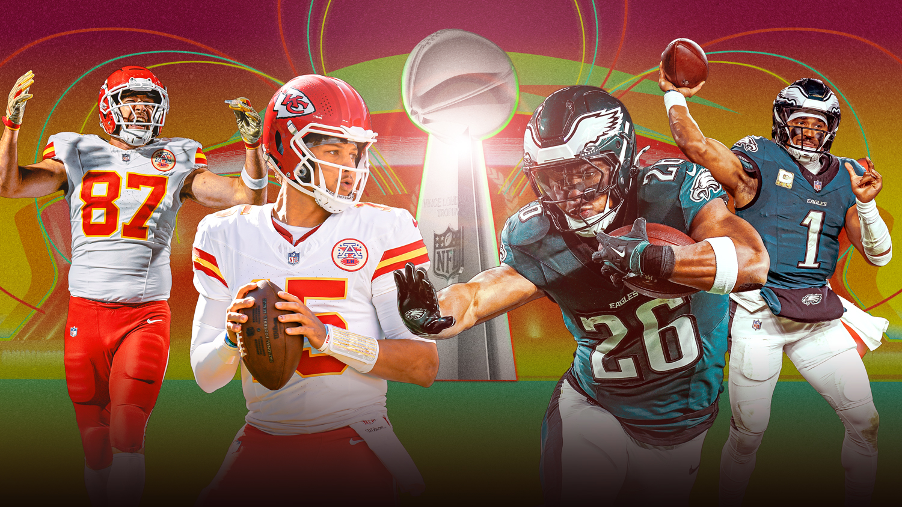
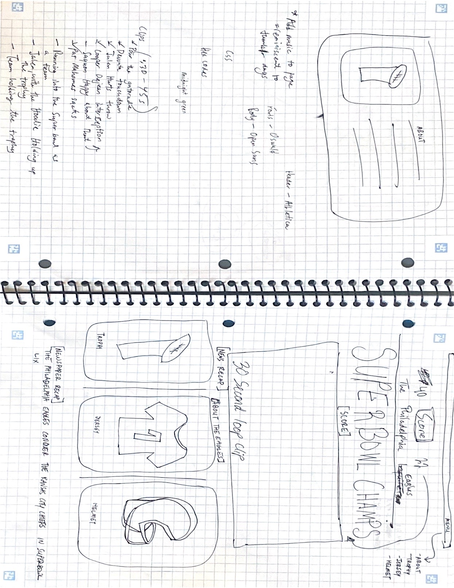
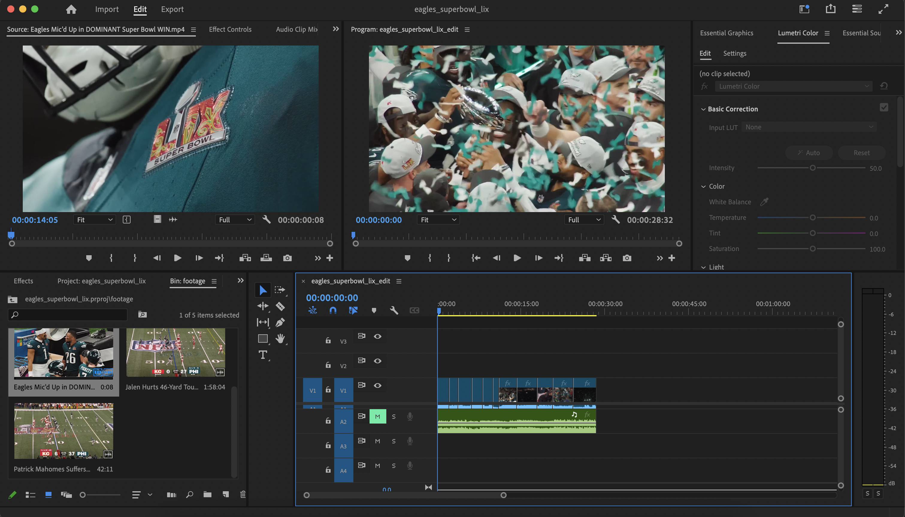
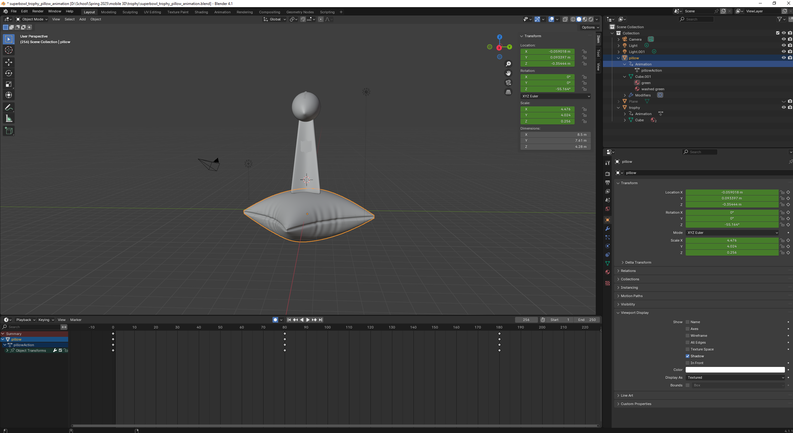
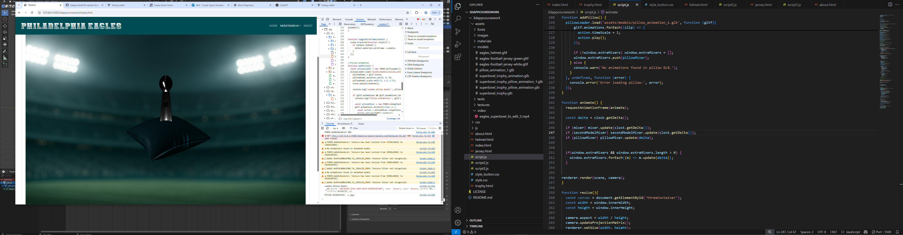
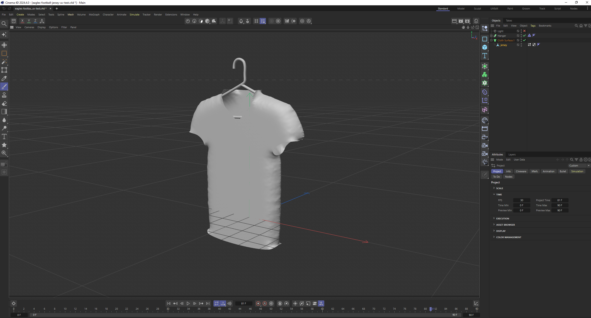
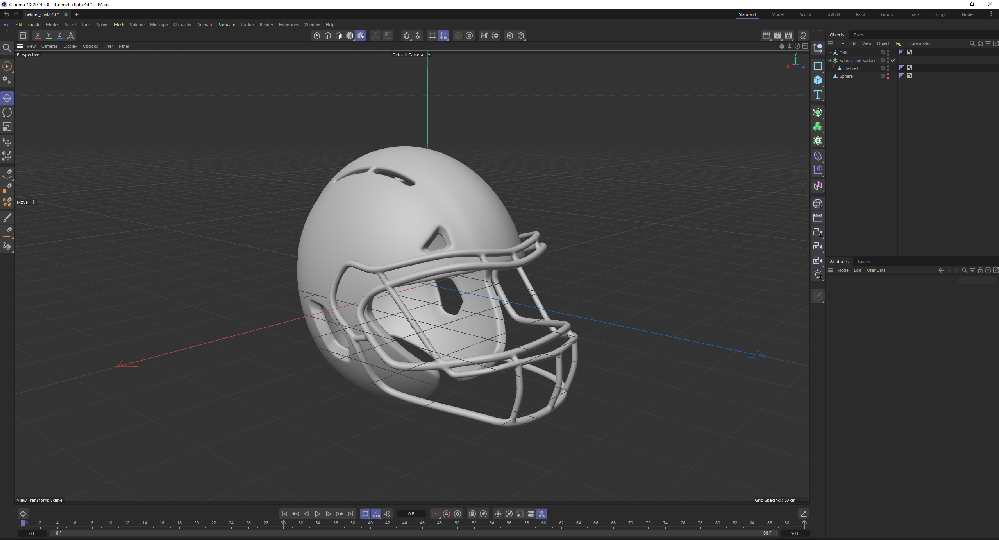
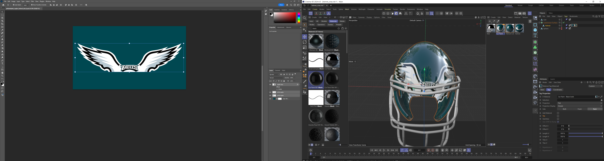

INSPIRATION
This webpage was created to honor the Philadelphia Eagles’ monumental Super Bowl win earlier this year. While I am not originally from Philadelphia, I spent the last six years living, studying, and working in the city before moving to Brighton to pursue my master’s degree. The Eagles’ first-ever Super Bowl victory in 2017 happened during my final year at Temple University, and I will never forget how electric the city felt. The pride and excitement that filled the streets were unlike anything I had ever experienced, especially coming from Washington, D.C., a city that has never reached the Super Bowl in my lifetime. Being part of that collective celebration was unforgettable. Although I couldn’t experience this year’s victory in person, I remain proud of the team, especially quarterback Jalen Hurts, who has faced significant criticism as one of the most polarizing quarterbacks in the NFL. I admire his unwavering dedication and relentless mindset, often compared to the likes of Kobe Bryant and Michael Jordan, athletes known for their discipline, focus, and pursuit of excellence. As someone who grew up playing, I’ve carried that same commitment and work ethic into my creative practice. This connection between athleticism and artistry is what inspired the creation of this webpage.
For this webpage, I created three models to represent this: the iconic Superbowl trophy, a football helmet and a football jersey. In this section, I break down the design and integration process for each model.
HOME
The home page has a newspaper vibe. I wanted it to feel like a newspaper with the Superbowl champions front and center. I added in a score bar to show the official final game school, including both teams' logos. For the statement piece, I put together clips from notable moments from the game and put them together in Adobe Premiere Pro for a 60 second clip that loops on the page. You see touchdowns, incredible catches by wide receivers A.J. Brown and DeVonta Smith, and some other fun shots. I enjoy video editing, so this was a fun piece to work on. I maintained the lab bootstrap html format for the cards, changing the images, text and color of the buttons to fit the overall theme of the webpage.
 TROPHY
Design Process
I designed and animated the Lombardi Super Bowl Trophy model in Blender, a process that took about a week to complete. The model consists of three parts: the football, the stand, and the pillow. For the animation, I kept it simple, with the trophy spinning, and added a feature to display the trophy resting on a pillow. To highlight the shine of the trophy, I used three light sources. I also introduced a toggle feature to add or remove the pillow animation. While I intended for the pillow’s texture to resemble suede, it appeared pixelated on the webpage. I was unsure how to resolve this, so I decided to leave it as it was.
Integration and Issues
Integrating the Super Bowl trophy into the webpage was fairly smooth, thanks to the lab scripts that guided me in adding the model with and without animation. The issues started when I tried to integrate the pillow model and its animation. The main challenge was the script structure. Since I already had the trophy and its animation set up, I needed a separate script for the pillow animation and an additional button in the HTML. At first, nothing worked. The pillow did not appear on the screen at all. I loaded the .glb file into the Three.js editor to troubleshoot, and both the pillow and trophy were visible there. However, clicking the pillow button on the webpage did not display it, and no errors showed up in the console.
I tried adjusting the scale from 1 to 1.5, thinking the model might be loading too small to see, but that did not work. With debugging help from ChatGPT, I found that I had placed the pillow animation inside the loadModel function above Spin Trophy when it should have been outside. I moved it just above the animate function. This triggered a new error saying delta was not defined. To fix this, I added const delta = clock.getDelta(); inside the animate function. The pillow animation started working, but the trophy animation stopped. Removing the delta line brought the trophy animation back, but the pillow stayed stuck as a small dot on the screen. Every fix seemed to break something else.
I realized the issue was that each new model was overwriting the mixer, secondModelMixer, or pillowMixer variables every time a new loader was called. To solve this, I stopped overwriting the mixer variables and instead stored all mixers inside an array. I then looped through the array inside animate() to update them. This approach finally allowed the pillow and trophy animations to work together smoothly.
Another issue was that I had originally exported the pillow animation together with the trophy, which caused duplicate animations. I re-exported the pillow animation separately to fix this. Finally, I noticed that every time I clicked the “Add Pillow” button, a new pillow would animate on top of the existing one, and the pillow would not disappear when clicking other buttons. I addressed this by turning the “Add Pillow” button into a toggle and creating a script to switch the pillow on and off. This not only solved the issue but also became a feature I really liked.
In the end, after troubleshooting and refining the scripts, everything worked as intended, and I was proud of the final integration. However, the lighting of the scene could have been better. I was unable to crack the lighting. Especially for the trophy, that shiny metallic feel that I had in the design phase is missing. Too much light overpowered the pillow, too little light took away from the look of the trophy. I settled for a middle ground, in the end.
JERSEY
Design Process
I designed the jersey model in Cinema4D. This turned out to be the most difficult model to create, even though I originally thought it would be the easiest. It truly became a labor of love. I wanted the jersey to capture the way it looks when football players wear it on the field—not just as a shirt, but with raised arms to mimic the structure created by shoulder pads.In the timelapse below, you can see part of my process for creating the initial body of the jersey. I traced both sides of the jersey using a spline and then connected them. To give the jersey a more relaxed, natural appearance, I applied a cloth surface.
The second and most challenging part of the process was adding the Philadelphia Eagles logo, number, and name onto the jersey. Since the front and back of the jersey had different designs, I needed to create separate designs for each side. This also meant I had to unwrap the model to apply the designs properly. It took me a few days to figure this out because most tutorials I found online focused on using mockups, but I wanted to learn how to do it from scratch. Once I unwrapped the model, I took a screenshot of the UV map and loaded it into Photoshop. I adjusted the image to achieve the colors I wanted and added the logo, number, and name to the appropriate sides. However, when I loaded the image as a material, the entire design appeared flipped. To fix this, I flipped the UV image in Photoshop and re-imported it as a material. After a few more adjustments, it finally looked right. I repeated this process to create a white version of the jersey to represent the away jersey.
Integration and Issues
The two jerseys were exported as .gltf files, allowing me to call both materials within the script by creating separate materials and textures for each. Since I created the materials manually and flipped them in Cinema4D, this later caused an issue when bringing them into the webpage. The first issue was needing to create a materials script within my script.js file and load my UV maps as PNGs, calling them into the script. These files can be found in the materials folder. Additionally, because I had flipped the original materials, I had to add a flipY line in the script to align the textures correctly on the model.
Finally, since the jersey is not an animation, I used the button feature to toggle between the home and away jerseys. Each button switches the materials rather than loading different models.
HELMET
Design Process
The helmet model took about two days to complete. Through this process, I learned that I prefer working in Cinema4D over Blender, although both programs have their own strengths and weaknesses. I followed a ZRemesher workflow tutorial, which broke the helmet into two main parts: the head shield and the grill. Some of the challenges I encountered included remeshing the hard surface of the helmet, where the polygons kept breaking. I wasn’t sure why this was happening, and I experimented with different techniques such as deleting points and manually reconnecting them, but the issue persisted. I later figured out that I needed to move the points slightly within the lines and that fixed the mesh to be able to progress forward.
For the material, I designed the helmet logo in Photoshop, sourcing some of the visual assets online. Adding the PNG of the helmet logo onto the helmet was not too difficult, but I could not remove the tiling effect. As a result, the helmet does not fully replicate the traditional Eagles helmet because the wing logo repeats across the back. Even after troubleshooting, I could not find a solution. Although it is technically an error, I like to think it adds a unique touch.
Overall, I am proud of the final helmet model. The texture has a glossy, reflective finish that mirrors the appearance of the Eagles’ actual helmets.
Integration and Issues
Integrating the helmet into the webpage was much smoother compared to the other two models. Since this model did not require animation, I avoided many of the complications I experienced with the trophy and jersey. Most of the challenges occurred during the modeling phase rather than during integration. The main difficulty I faced was with the camera placement on the webpage. For some reason, the camera was angled above the model, causing the helmet to rotate awkwardly when interacting with it. Adjusting the camera positioning was the most frustrating part of integrating this model.
EXTRAS
Adding in audio which was sourced on YouTube and changing the background of the models, which were created in AI using imagery sourced on Pinterest and recreating them with the blur effect to prevent the clashing with the model but still adding some depth.
GENERATIVE AI STATEMENT
I acknowledge that I used generative AI tools, specifically OpenAI’s ChatGPT, to support the development of parts of my project. The AI was used to assist in debugging JavaScript code integration issues and generating background images for my models. All outputs generated by the AI were reviewed, adapted, and finalized by me to ensure they met the project’s requirements and academic standards.